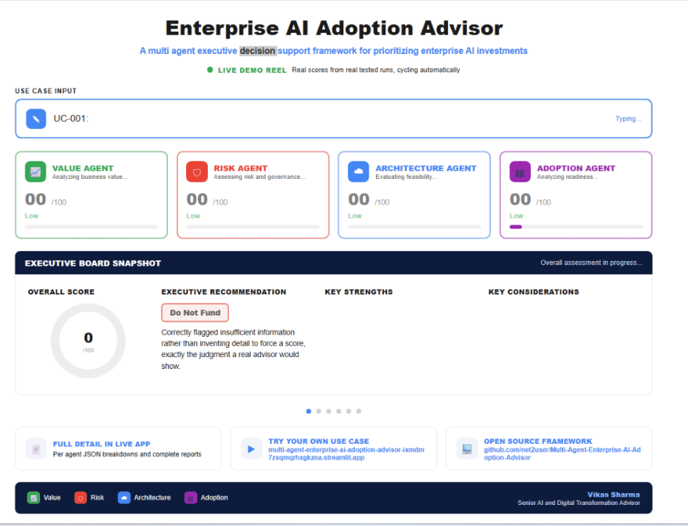
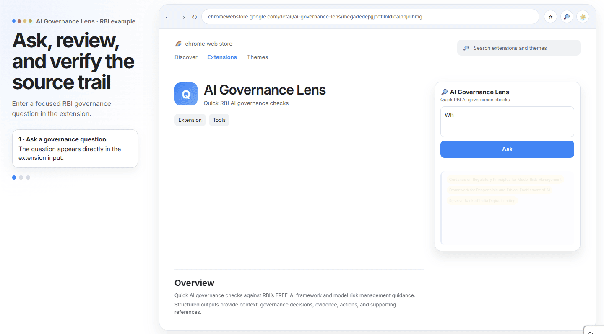

Practical decision-support tools that help organizations move from AI ambition to accountable action: deciding which initiatives to pursue and examining how AI should be governed in regulated enterprise environments.
Practical decision-support tools designed to help organizations prioritize, govern, and operationalize enterprise AI with greater clarity and accountability.
Evaluate and prioritize AI initiatives across business value, risk, governance, data readiness, adoption, and implementation feasibility.
Explore the AdvisorA Chrome extension for structured AI-governance questions, reviewable responses, and supporting evidence in RBI and BFSI contexts.
Explore AI Governance LensEnterprise AI decisions involve more than selecting a model or launching a pilot. Organizations need to understand where AI can create value, whether they are ready to act, what risks and governance questions must be addressed, and what conditions need to be in place before implementation.
Decide where AI can create value, assess readiness, compare adoption options, and identify the actions needed to move from an idea to implementation.
Explore the AdvisorExamine an AI initiative through governance, accountability, risk, and responsible AI considerations before moving toward implementation.
Explore AI Governance LensSee how the tools turn an enterprise AI question into structured analysis, recommendations, and decision support.
See a use case move from an initial idea to an executive briefing, scorecards, and a funding recommendation.

Open the Advisor DemoSee an RBI governance question become a structured response with evidence and supporting references.

Open RBI Query DemoAnyone who has to walk into a room and make the case for or against a new AI initiative, at any level, in any domain.
CEOs, CTOs, CIOs, Executive Stakeholders and Boards
Operational Teams, Sales Heads, Sales Executives, Customer Acquisition Teams
Development Teams, PMO, Product Managers across every domain
Run one initiative through the full evaluation and get back an Executive Briefing, a funding recommendation such as Fund with Conditions, along with the top conditions attached to that funding and the key tension leadership needs to resolve before moving forward.
Every assessment scores Value, Risk, Complexity, Adoption, and Data Readiness independently, each out of 100, each with a supporting figure, estimated dollar range, weeks to pilot, confidence level, so the rating isn't a black box number.
Rank every use case at once across a shared scoring model, sorted into Quick Win, Strategic Bet, Long Term Play, or Reconsider, with portfolio level observations that surface patterns a single use case view would miss.
Expand into the reasoning behind each score, Value agent, Risk and Governance agent, Architecture agent, Adoption agent, and Data Readiness agent, each with its own detailed breakdown behind the summary number.
These solutions are grounded in a broader approach to Enterprise Intelligence Architecture, where AI adoption, data readiness, operating models, governance, risk, and accountability are considered together rather than as isolated concerns. The goal is not simply to introduce AI capabilities. It is to help organizations design the decision workflows, evidence, controls, and human oversight needed to move from isolated initiatives toward an AI-enabled enterprise.
Explore both decision-support tools directly. The Enterprise AI Adoption Advisor evaluates whether an AI initiative is ready to fund and implement, while the AI Governance Lens helps teams ask, verify, and act on governance guidance with an evidence trail.
Reach out directly and I will walk you through the platform against a use case relevant to your organization's actual situation.
Connect with Vikas